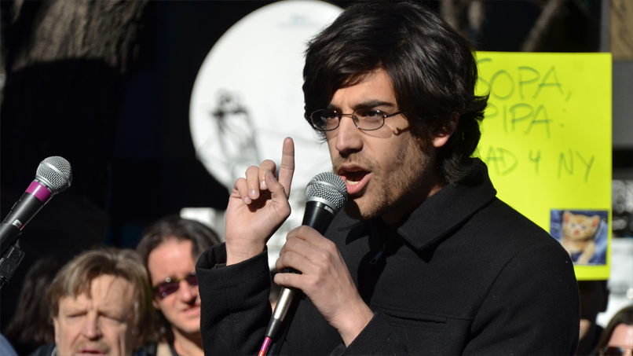
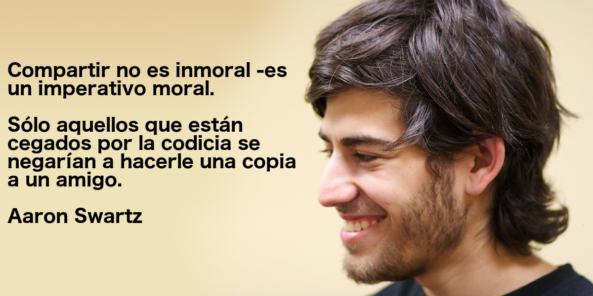

Cuando me preguntan si tengo algún ídolo o persona exitosa que admire, es un poco difícil de pensar en esto. Si bien, cuando leí que Linus Torvalds empezó Linux como pasatiempo, no instale Linux inmediatamente. Sin embargo, noté que ya había utilizado una distribución sin darme cuenta.
Un día, mi hermana me comentó sobre Aaron Swartz. Vi lo que había hecho y quien era, después empecé a indagar más en la información que había sobre su vida.

Swartz fue una de las mentes más creativas y combatientes del ciberespacio. Dejó de existir a los 26 años, y su legado fue uno de los más grandes; no por nada, se le conoce como "el niño dorado de Internet".
Nació el 8 de noviembre de 1986 en la ciudad de Chicago. Su padre, Robert Swartz, había fundado una compañía de software, por lo que desde muy pequeño Aaron manifestó su interés en las computadoras y la programación.
Aaron ayudó en la creación del formato RSS, el cual sirve para compartir contenidos en la web y que hoy en día es utilizado por muchos sitios. También trabajó en la creación de estándares al interior del World Wide Web Consortium, así como en el lenguaje Markdown al lado de John Gruber y con apenas 15 años,estuvo involucrado en la fundación de Creative Commons.
Ya en la universidad, decidió fundar una pequeña empresa llamada Infogami, cuya plataforma terminó por fusionarse en 2005 con Reddit. Para el año siguiente, esta recién formada compañía fue comprada por Condé Nast (dueña de publicaciones como Wired y The New Yorker). Debido a esto, Swartz tuvo que mudarse a las oficinas de la revista Wired en San Francisco, de donde se retiró poco tiempo después.
Aaron, el activista
La visión de Swartz sobre internet no solo era tecnológica, sino también social; al fin y al cabo era un hacker. Siempre se mostró interesado en proyectos que promovieran la libertad de información y la cultura de la participación, como Open Library, Wikipedia o la misma Creative Commons. Sin embargo, esto no fue suficiente para él: era necesario tomar acciones fuera de las trincheras virtuales.
En 2010 fundó Demand Progress, una organización dedicada a realizar movimientos legales en contra de iniciativas que atentaran en contra de un internet libre y neutral.
Fue así que Aaron encabezó una serie de protestas ante la llamada Ley SOPA, que pretendía combatir la piratería y la infracción de los derechos de autor en la red, a base de modificaciones en la ley estadounidense. Para sus detractores, SOPA no era más que una forma de proteger los intereses de la industria del entretenimiento, sin importar que eso representara una amenaza para la libertad de expresión y el espíritu de innovación en internet.
Luego de varias manifestaciones en contra de SOPA alrededor del mundo, todos los esfuerzos convergieron en un “apagón masivo” que llevó a cabo el 18 de enero de 2012, cuando miles de sitios web decidieron suspender sus servicios durante 24 horas. Días después, los planes para la elaboración del proyecto de ley fueron pospuestos indefinidamente, una decisión con sabor a victoria que posteriormente, durante un evento en la ciudad de Washington, Aaron retomaría en su discurso titulado How We Stopped SOPA (Cómo detuvimos SOPA):
“Hemos ganado esta batalla porque todos se convirtieron en el héroe de su propia historia. Todo el mundo tomó como misión propia el salvar a esta libertad fundamental”.
El caso JSTOR y el MIT
El punto crítico en la vida de Aaron Swartz comenzó en 2011, cuando se le acusó de haber descargado ilegalmente 4 millones de documentos de la librería digital –y privada– JSTOR desde una red del Instituto Tecnológico de Massachusetts (MIT, por sus siglas en inglés), con la intención de publicarlos en línea. Según las acusaciones, Swartz descargó los archivos a través de un disco duro portátil conectado a un conmutador que se encontraba en una pequeña habitación del MIT.
Tras su arresto y más de un año y medio de proceso legal, Swartz enfrentaba 13 cargos en su contra con una condena de hasta 35 años de prisión y una multa de un millón de dólares.
Aaron Swartz padecía de depresión y el 11 de enero de 2013, fue encontrado muerto en su departamento de Brooklyn, Nueva York. La causa del fallecimiento fue determinada como suicidio. La madre de Aaron describió dicha situación como “el producto de un sistema de justicia penal plagado de intimidación y persecución exagerada” y criticó la indiferencia del MIT ante tal situación.
Más de medio año pasó desde el fallecimiento de Aaron, hasta que en julio del 2013 las autoridades hicieron públicos algunos de los documentos del caso. Luego, en diciembre del mismo año, se liberó el video de vigilancia que fue usado como prueba para acusar a Swartz. Si bien los archivos demostraron que el MIT no tuvo que ver con la persecución legal que enfrentó el activista, también demostraban la tibieza de la institución en el caso.
Al final, para Aaron el internet no sólo era una herramienta de comunicación, sino una forma de cambiar al mundo. Y eso es algo por lo que vale la pena luchar.
Hasta siempre, Aaron Swartz.